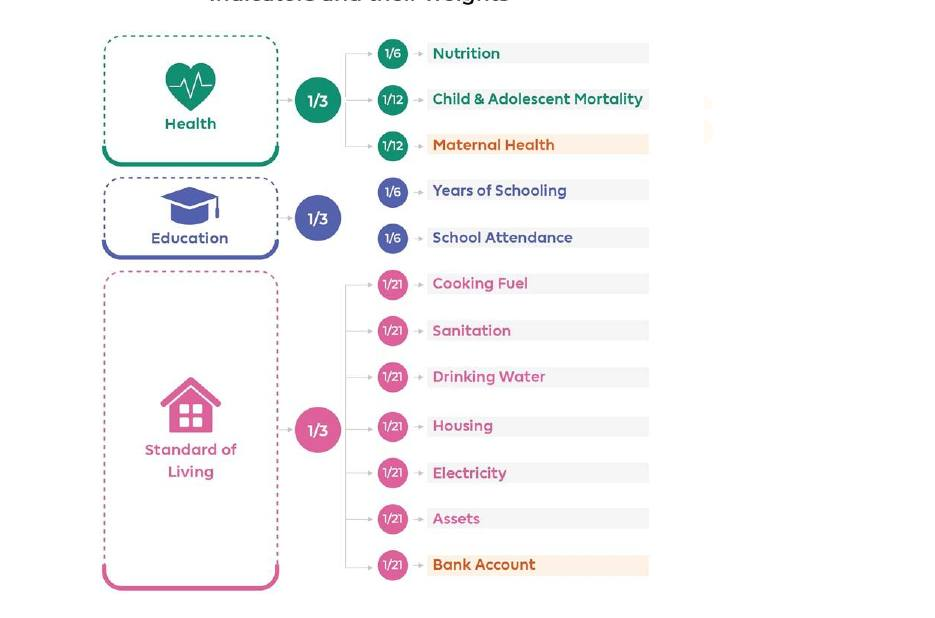
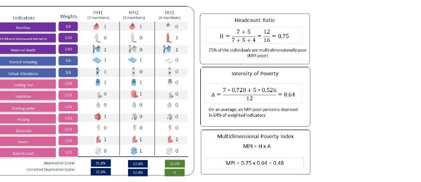
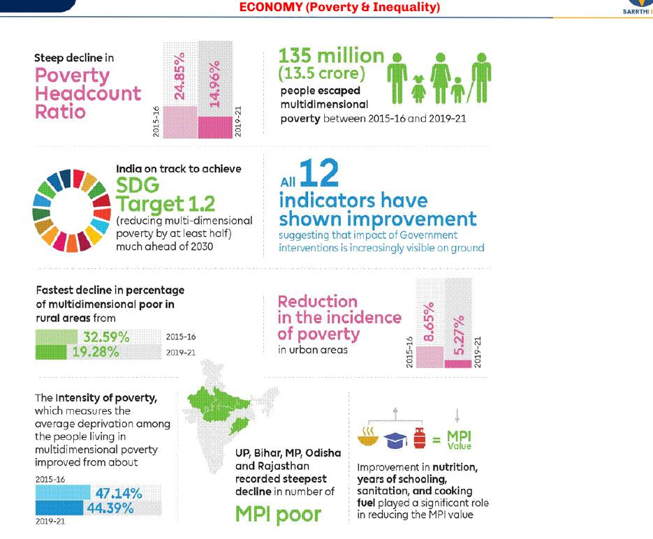
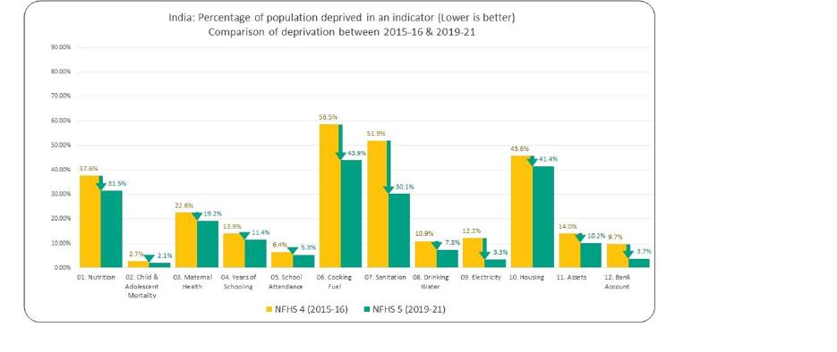
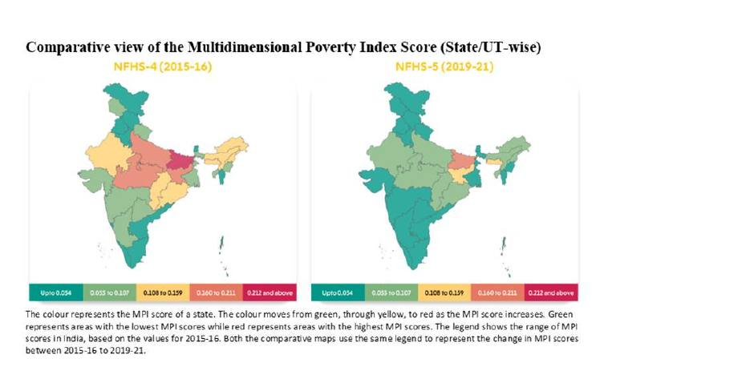
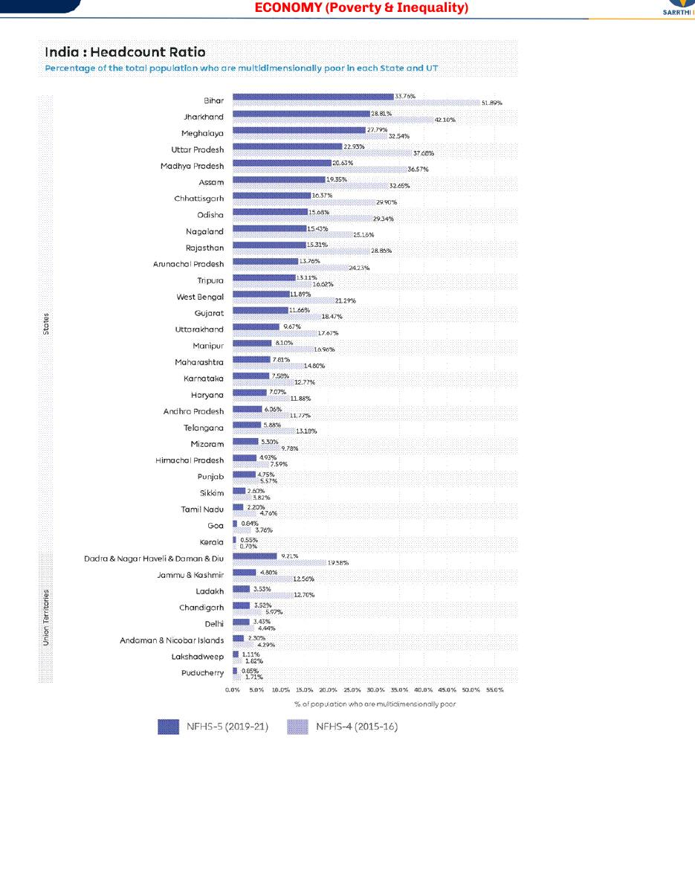

The handout ends Chapter 1 by turning to inequality, "the relative aspect of poverty". Relative poverty is a reflection of inequality, and the PGI limit (ignores inequality among the poor) leads straight into it.
Economy · GS Foundation · Chapter 1
Poverty: Meaning, Measurement and India's Progress
Handout only: no class slidesHandout pages 2-26No PYQs quoted
What poverty means, why and how it is measured, the poverty line and its six expert committees, India's slow-then-fast decline, the World Bank lines and PPP, the multidimensional index (global and India's National MPI with the worked example), and the depth and severity of poverty (PGI and SPG).
Chapter map#
- Poverty
What is poverty
- Inadequacy of well-being World Bank
- Absolute (normative) vs relative
- Relative poverty reflects inequality
Why measure
- Assess progress, not pick beneficiaries
- Inclusion vs exclusion errors JAM trinity
- HCR = estimate from sample HCES, consumption
Poverty line
- PLB: normative basket
- Dandekar 71, Alagh 79, Lakdawala 93
- Tendulkar 09 = official Rangarajan 14 not accepted
- URP to MRP to MMRP
India's progress
- 65% 1951 to 45% 1993 0.44 pp a year
- 22% in 2012 1.15 pp a year
- About 1% HCES 2023-24
World Bank lines
- IPL $3.00 (LIC median)
- LMIC $4.20, UMIC $8.30 2021 PPP
- India: 5.3%, 24%, over 80%
- PPP and ICP
MPI
- Global: 3 dimensions, 10 indicators OPHI, UNDP
- India: 12 indicators, 33% cut-off NITI Aayog
- MPI = H x A worked example 0.48
- 24.85% to 14.96%, 135 million NFHS-4 to 5
Depth and severity
- HCR treats all poor alike
- PGI: average shortfall cost of ending poverty
- SPG: squared gap poorest of the poor
- FGT 1984
Exam lens: priority and PYQs#
What the handout itself stresses
| Signal in the handout | Where | Why it matters |
|---|---|---|
| "Rangarajan's PL was not accepted & Tendulkar continued to be our official PL" | Section 4 (handout p6) | The handout flags this with asterisks. A classic one-line Prelims fact. |
| "Understand the 'why' to know the 'how'": poverty estimation is for assessing progress, not for picking beneficiaries | Section 3 (p3-4) | The handout repeats this twice. Mains-style reasoning. |
| SDG 1.1 (end extreme poverty by 2030) and SDG 1.2 (halve poverty in all dimensions by 2030) | Sections 6 and 9 | Both targets are named with their wording. |
| World Bank lines: $3.00, $4.20 and $8.30 a day (2021 PPP, June 2025) | Sections 6 and 7 | Three lines, three economic groups, three very different Indian poverty rates. |
| National MPI: 12 indicators, 33% cut-off, MPI = H x A, NFHS-4 versus NFHS-5 | Sections 9 and 10 | The handout spends the most space here, with a worked example and state data. |
1 · What is poverty? Well-being and deprivation#
Everyone knows what poverty is, but defining it is harder. Is it too little income? Not reaching basic necessities? Poor health and education? Missing opportunities? The World Bank gives the broad answer: poverty is inadequacy of well-being. So the first question is what well-being is.
Dimensions of well-being (the handout says the list is not exhaustive)
| Dimension | Focus | Key elements |
|---|---|---|
| Physical | Caring for your body so it works well | Regular activity, balanced nutrition, sleep, proactive healthcare |
| Emotional | Understanding and managing feelings | Healthy coping, managing stress, emotional intelligence |
| Social | A healthy support network | Meaningful relationships, community participation, belonging |
| Financial | Stability and peace of mind about material resources | Income balanced with spending, assets and savings, planning. Financial stress ranks as a top source of anxiety |
| Intellectual | Creative and mentally stimulating activity | Continuous learning, new hobbies, problem-solving |
| Spiritual | Meaning and purpose | Living by core values, purpose, mindfulness (religion, meditation or nature) |
| Environmental | The effect of your surroundings on health | Safe, organised spaces, time in nature, sustainable living |
In general, poverty is the state of not having enough material possessions or income for basic needs. It can have social, economic and political elements. It includes lack of income for basic facilities, lack of healthcare, education, drinking water and sanitation, lack of physical and social security, and lack of opportunities to improve one's life.
2 · Two ways to assess poverty: absolute and relative#
| Absolute poverty | Relative poverty | |
|---|---|---|
| Basis | A standard criterion used to separate poor from non-poor | Comparison with others |
| Who decides | Experts suggest a normative criterion (their opinion), so it is also called normative poverty | Mean or median income of the population, or another person or group |
| Example | Cannot afford the expert's basket of goods | A person is relatively poor if income is below the population average |
| Link | A person who is not poor by the absolute standard may still be poor relative to others | Relative poverty is a reflection of inequality |
3 · Why measure poverty? Understand the "why" to know the "how"#
The poor must be identified so that they can get benefits from anti-poverty programmes. Each scheme has its own beneficiary criteria, and the aim is to minimise two errors:
- Exclusion error: a deserving person is left out of the list.
- Inclusion error: an undeserving person is put on the list.
- There is a trade-off between the two, so governments try to minimise exclusion errors first.
- Technology helps: the JAM trinity (Jan Dhan accounts, Aadhaar-based identification, Mobile for instant communication). The trade-off will always remain.
The real purpose of poverty measurement is not identification for benefits. It is to assess the progress of the country: is the money spent on schemes improving people's standard of living and well-being? For that we need a normative standard, a milestone, and we ask how many were below it then and how many are below it now. It also allows a fair comparison across regions, for example across states.
The five-step process of measuring poverty
1 · Lay down a standard
This is the poverty line (PL)
2 · Build a representative sample
It must have the diversity of the population in similar proportions
3 · Collect information relevant to the standard
From the sample
4 · Apply the standard
Find the share below it. If the sample is representative, extrapolate to the population
Result: poverty ratio = head count ratio (HCR)
The proportion below the line in the whole population
- Example: if 20% of a representative sample is below the PL, the population is assumed to have around 20% below the line. This is an estimate, not a count.
- The handout calls poverty estimation "a purely academic exercise". The poor have nothing to do with it and may not even know the criteria, since it has no bearing on their well-being. It is a tool to judge success in improving well-being.
- Standard estimates come from NSSO through the Household Consumption Expenditure Survey (HCES).
- Poverty is assessed on consumption expenditure (CE), not income, because income is less truthfully revealed and more volatile.
4 · The poverty line basket and the committees#
An expert builds a poverty line by constructing a poverty line basket (PLB): the goods and services the expert thinks must be consumed to live a life of basic dignity. Not being able to afford the basket means pronounced deprivation. The PLB is normative: experts differ, and an expert's view can change as living standards improve. The idea stays the same: everybody should be able to afford some basket of goods and services (G&S) for a life of basic dignity.
The price of the basket is collected from the relevant market, and its total value becomes a consumption-based poverty line.
Before independence, scientific efforts to measure poverty were made by Dadabhai Naoroji ("Poverty & Un-British Rule in India", 1906), the National Planning Committee (1938) and the Bombay Plan (1944), among others. After independence the Planning Commission was given the job and, from the 1970s, set up expert committees.
Evolution of the poverty line in India
| Committee | What it added | Detail |
|---|---|---|
| Dandekar and Rath (1971) | Laid the foundation of a calorie-based PL | Poverty = inability to get a minimum of 2250 calories per person per day. The PLB had food and non-food parts. |
| YK Alagh (1979) | Split the PL into rural and urban | Minimum energy 2400 (rural) versus 2100 (urban) calories. Baskets reflected different consumption patterns, with prices from relevant markets. |
| Lakdawala (1993) | State-specific PLs | Reflected differences in consumption pattern and prices across states. Calorie requirement kept the same. Suggested updating the PL with a relevant inflation index. |
| Tendulkar (2009) | Added health, education, drinking water and sanitation | Earlier committees assumed the government paid for these on behalf of the poor, so they had minimal or no value in the PL. Tendulkar observed HCES data and added normative expenses on them. Still calorie-based, but the non-food part grew, so the PL rose. |
| Rangarajan (2014) | Added a behavioural component | Counted actual spending on items like alcohol, tobacco, entertainment, behavioural health and education, since the poor do spend on them. |
Rangarajan's basket in three parts
| Part | Contents |
|---|---|
| Normative: food | Based on ICMRguidelines (calories, fat, protein) for the age-sex mix of an average household of 5 (for example grandmother, parents, 2 children) |
| Normative: non-food | Housing, clothing, transport, health, education and so on |
| Behavioural | Alcohol, tobacco, behavioural health and education and so on |
How the recall period changed
URP · uniform recall period
MRP · mixed recall period
MMRP · modified mixed recall period
Today's method: 7-day or 30-day recall for frequently consumed items, 365 days for less frequent items
5 · India's progress on reducing poverty#
The handout uses the Tendulkar line to compare progress since Independence and splits the period into two phases.
| Phase | What happened | The arithmetic in the handout |
|---|---|---|
| Slow reduction (before 2000s) | HCR fell from about 65% in 1951 to about 45% in 1993 | About 20 percentage points (pp) in about 45 years = 0.44 pp a year. The number of poor still rose because population grew faster. Compare China. |
| Fast reduction (after 2000s) | Growth almost doubled, from 3.5% to 6.5%. HCR was about 22% in 2012 | A fall of about 23 pp (45 to 22) in 20 years = 1.15 pp a year, thrice the earlier pace. |
| Latest (HCES 2023-24) | HCR about 1% | Almost 2 pp a year over the last decade, so the pace has been exceptionally rapid. |
| Yardstick | Year | Figure | Where |
|---|---|---|---|
| Tendulkar line (HCR) | 2012 | Around 22% | Section 5 |
| India's latest national line (announced 2014) | 2011-12 | Nearly 30% (the handout adds "or at least a third": the wording is loose) | Section 6 |
| World Bank extreme poverty line ($3, 2021 PPP) | 2011-12 | 27.1% | Summary, section 11 |
| World Bank extreme poverty line ($3, 2021 PPP) | 2022-23 | 5.3% | Sections 7 and 11 |
| HCES latest (Tendulkar-based comparison) | 2023-24 | Around 1% | Section 5 |
Because of population growth, the absolute number of poor in India rose until the 2000s to around 530 million and then fell sharply. The handout explains that the 1970s saw the fastest population growth since Independence, with low economic growth at the same time.
6 · World Bank poverty lines, PPP and how India's rate is computed#
The World Bank uses group-specific poverty lines based on GNI per capita. The line for low-income countries (LIC) is the Extreme or International Poverty Line (EPL or IPL). A person in a non-LIC who spends below the line would be poor not only at home but in an LIC as well. So the IPL is the basis of development goals: under SDG 1.1 countries must eliminate extreme poverty by 2030.
The three lines (June 2025, 2021 PPP)
| Line | How it is set | Value per person per day | In rupees (handout) |
|---|---|---|---|
| International Poverty Line (extreme) | Median of national lines of low-income countries | $3.00 | About ₹60 (₹62 in the summary, at PPP 20.6) |
| LMIC line | Median of national lines of lower-middle-income countries. India is in this group | $4.20 | About ₹84 |
| UMIC line | Median of national lines of upper-middle-income countries (for example China, Mexico, Indonesia, South Africa) | $8.30 | Not given |
Purchasing power parity (PPP)
- PPP is a theory that tries to equate the purchasing power of a sum of money at one place with the amount needed to buy the same goods elsewhere. Example in the handout: apples at ₹100/kg in India and $5/kg in the US mean ₹100 has the same purchasing power as $5.
- PPPs are rates of currency conversion that equalise purchasing power by removing price-level differences between countries.
- Why it is needed: in 2023 GDP per capita was about 205,000 rupees in India, 89,000 yuan in China and 83,000 dollars in the US. In local currency these say nothing about how they compare. PPP adjusts for the higher cost of living in some countries.
- Market exchange rates do not help: US$1 may convert to Rs 90 in the market, but something costing $1 in the US cannot be bought at Rs 90 in India.
How the World Bank estimates poverty
From national survey to a global poverty rate
ICP builds PPPs
The International Comparison Programme prices a pre-defined basket in each country, with the US dollar as base currency. Latest PPPs: 2021
Draw the global lines
Median of national poverty lines, converted into PPP terms. The Bank began measuring in the 1980s; first global line: $1 a day in 1990
Take a household survey near the PPP base year
Income or consumption survey of the country
Deflate or inflate to 2021 prices
Use each country's consumer price index, so surveys done in different years are comparable
Convert to PPP dollars and apply the line
Share below the line = poverty rate (headcount ratio)
How India's rate is calculated
- India built national lines several times from the 1970s to the 2010s. The latest was announced in 2014 and applied to 2011-12 data: nearly 30% poor.
- Since 2014 India has had no poverty line, so the World Bank's current global lines are computed without an Indian line. The Bank still estimates India's rate with its international lines.
- NSO ran a nationally representative HCES in 2022-23 after an 11-year gap. It records all monetary spending on domestic consumption and values the subsidised goods consumed.
- The Bank converted the cost of the pre-defined basket (the "welfare aggregate") from survey-time prices to 2021 prices using India's CPI, expressed it in a common currency with 2021 PPPs, got the distribution of households by PPP-adjusted real consumption, and applied the global lines.
7 · What the World Bank says about India (latest estimates)#
The Bank estimates India's poverty fell from one in two people in the 1970s to one in twenty by 2022. (The handout heads this part "Dec 2025 estimates"; the lines themselves are the June 2025 ones.)
India at each line
| Line | Share of India poor | Number | Remark |
|---|---|---|---|
| $3.00 (extreme) | 5.3% (one in twenty) | About 75 million in 2022 | More than a quarter were in extreme poverty in 2011; the majority in 1977. Fastest fall after 2004. |
| $4.20 (LMIC) | 24% in 2022 (nearly one in four) | Close to 350 million | Seen as the more appropriate line for India, a lower-middle-income country. |
| $8.30 (UMIC) | More than 80% (four in five) | A little over 1.15 billion | Only about one in five in China and Viet Nam. |
India compared with others
- Extreme poverty: world 10.8%, India 5.3%. This is the first time India is below the global average.
- Bangladesh is similar (5.9%). China and Viet Nam have eradicated extreme poverty.
- At the LMIC line, India's rate is still higher than the world average.
- India's fall in extreme poverty was slower than China and Viet Nam, faster than Nigeria and Kenya.
- China's rates were higher than India's until the 2000s. By 2020 it had ended extreme poverty and lifted the whole country above the LMIC line.
- Global extreme poverty is concentrated in Sub-Saharan Africa; South Asia holds a large share of the poor when measured at middle-income lines.
- India's share of the world's extreme poor fell from 27% in the 2000s to about 9% in 2022. Before the 2000s India had more poor than Sub-Saharan Africa.
- The message: few Indians are in extreme poverty now, but most of the rest are not very rich either and live in conditions that would count as poverty in middle-income countries.
8 · Why a money line is not enough: multidimensional poverty#
The conventional approach (consumption-based lines) does include deprivation, but it checks it through the ability to spend a normative amount. So deprivation is judged in money terms. A person may be able to spend on necessities and still be deprived because those necessities are not regularly available or accessible. Such deprivation is assessed directly and explicitly through multidimensional poverty.
- The standard (global) MPI was proposed by OPHI (Oxford Poverty & Human Development Initiative) to UNDP, which publishes the global MPI report.
- It looks at three dimensions: health, education and standard of living, using 10 indicators, each with a deprivation criterion (malnourishment, mortality, attendance, drinking water, cooking fuel and so on). Each criterion links to an SDG.
- Example: a household is deprived of cooking fuel if it uses solid fuel such as tree bark or cow dung and has no modern fuel such as LPG or kerosene.
- A household deprived on 3 or more of the 10 indicators is multidimensionally poor (as the handout states for the global version).
- The MPI was developed by Sabina Alkire and James Foster and adopted by UNDP in its Human Development Report in 2010. It captures overlapping deprivations in health, education and living standards.
9 · India's National MPI: method, indicators and the worked example#
- NITI Aayog, with UNDP and OPHI, developed the National MPI. It complements income poverty by measuring deprivations directly, and can monitor poverty at national, state and district levels.
- It contributes to SDG target 1.2: reduce at least by half the proportion of men, women and children of all ages living in poverty in all its dimensions according to national definitions, by 2030.
- The Progress Review 2023 gives estimates for 36 States and UTs and 707 administrative districts on 12 indicators, from NFHS-5 (2019-21), and changes since NFHS-4 (2015-16). It gives both how many are poor (headcount) and how poor the poor are (intensity).
- Method: the dual-cutoff approach of Alkire-Foster (AF), as in the Global MPI. India kept the 10 global indicators and added 2: Maternal Health (in Health) and Bank Account (in Standard of Living).

Computing the National MPI
1 · Deprivation profile
Each household gets a deprivation score from its deprivations in the 12 indicators
2 · Identify the poor
If the household's deprivation score is above 33%, it is multidimensionally poor
3a · Headcount ratio (H): how many are poor?
Multidimensionally poor persons divided by total population
3b · Intensity (A): how poor are the poor?
Sum of weighted deprivation scores of all the poor divided by the number of poor people
MPI = H x A
Headcount ratio multiplied by intensity of poverty

The 12 indicators and their deprivation definitions
| Dimension | Indicator | A household is deprived if... |
|---|---|---|
| Health | 1 · Nutrition | any child (0-59 months), woman (15-49 years) or man (15-54 years) with nutrition information is undernourished |
| Health | 2 · Child-adolescent mortality | any child or adolescent under 18 died in the household in the five years before the survey |
| Health | 3 · Maternal health | any woman who gave birth in the last 5 years did not get at least 4 antenatal visits for the latest birth, or no trained skilled help at the latest childbirth |
| Education | 4 · Years of schooling | no member aged 10 or above has completed six years of schooling |
| Education | 5 · School attendance | any school-aged child is not attending school up to the age at which he or she would complete class (the handout text is cut off here) |
| Standard of living | 6 · Cooking fuel | cooks with dung, agricultural crops, shrubs, wood, charcoal or coal |
| Standard of living | 7 · Sanitation | unimproved or no sanitation facility, or improved but shared with other households |
| Standard of living | 8 · Drinking water | no improved or safe drinking water, or safe water is at least a 30-minute walk (round trip) |
| Standard of living | 9 · Housing | floor of natural materials, or roof or wall of rudimentary materials |
| Standard of living | 10 · Electricity | no electricity |
| Standard of living | 11 · Assets | does not own more than one of radio, TV, telephone, computer, animal cart, bicycle, motorbike, refrigerator, and does not own a car or truck |
| Standard of living | 12 · Bank account | no household member has a bank or post office account |
Why MPI helps (handout conclusion)
| Benefit | Meaning |
|---|---|
| Complements money statistics | Shows non-monetary deprivation directly |
| Monitors single indicators and dimensions | Overlaps with several SDGs |
| Breaks down by state and district | Better policy focus |
| Enables integrated policy | Cross-sectoral action |
10 · India's progress on multidimensional poverty (NFHS-4 to NFHS-5)#

National figures
| Survey | MPI | Headcount ratio (H) | Intensity (A) |
|---|---|---|---|
| NFHS-5 (2019-21) | 0.066 | 14.96% | 44.39% |
| NFHS-4 (2015-16) | 0.117 | 24.85% | 47.14% |
Rural and urban
| Survey | Rural MPI | Rural H | Rural A | Urban MPI | Urban H | Urban A |
|---|---|---|---|---|---|---|
| NFHS-5 (2019-21) | 0.085 | 19.28% | 44.55% | 0.023 | 5.27% | 43.10% |
| NFHS-4 (2015-16) | 0.154 | 32.59% | 47.38% | 0.039 | 8.65% | 45.27% |
- 135 million people escaped multidimensional poverty in the five years. India is on track for SDG 1.2 (halve poverty in all forms by 2030).
- The MPI value nearly halved (0.117 to 0.066). Intensity fell from about 47.14% to 44.39%.
- Rural-urban gap remains (19.28% rural versus 5.27% urban in 2021), but the fall was pro-poor in absolute terms: rural areas saw the fastest fall.
- All 12 indicators improved, with statistically significant reductions. Biggest falls: sanitation (21.8 pp) and cooking fuel (14.6 pp).
- Highest headcount: Bihar 33.76%, then Jharkhand 28.81%.
- Biggest fall in incidence: Bihar (18.13 pp), Madhya Pradesh (15.94 pp), Uttar Pradesh (14.75 pp).
- District-level estimates let governments and organisations see specific challenges and target interventions.



Policy push behind the fall
- The handout credits investment in education, nutrition, water, sanitation, cooking fuel, electricity and housing.
- Schemes named: Swachh Bharat Mission (SBM), Jal Jeevan Mission (JJM), Poshan Abhiyan, Samagra Shiksha, Saubhagya (PM Sahaj Bijli Har Ghar Yojana), PM Ujjwala Yojana (PMUY), PM Jan Dhan Yojana (PMJDY), PM Awas Yojana (PMAY).
- Several MPICC meetings were held after the baseline report to prepare Reform Action Plans. More than 50 reform actions in 16 reform areas (nutrition, financial inclusion, education, rural development, housing and more) were identified.
- The second edition of the National MPI helps states track hotspots down to the district level. NITI Aayog supports states in making reform plans.
11 · Summary of India's progress and what is still missing#
Key triumphs: a decade of decline
| Measure | Then | Now |
|---|---|---|
| Extreme poverty rate (national) | 27.1% (2011-12) | 5.3% (2022-23) |
| Rural extreme poverty | 18.4% | 2.8% |
| Urban extreme poverty | 10.7% | 1.1% |
| Rural-urban gap | 7.7 pp | 1.7 pp |
| Multidimensional poverty (12-indicator NITI index) | 55.34% (2005-06) | 14.96% (2019-21) |
| Consumption-based Gini | 28.8 (2011-12) | 25.5 (2022-23) |
- Five populous states (UP, Maharashtra, Bihar, West Bengal, MP) held 65% of India's extreme poor in 2011-12 and drove two-thirds of the national fall.
- Drivers: Jan Dhan, PM Kisan Samman Nidhi, and foodgrain distribution to 80 crore people. Methodology also changed with the 2022-23 consumption survey (better tracking of food and non-food spending).
Persistent challenges (the "dignity deficit" and more)
| Challenge | Figure in the handout |
|---|---|
| Dignity deficit | ₹62 ($3) a day is widely seen as too little for a life with dignity. One litre of Amul milk cost ₹63 in 2022. |
| Income inequality (2023-24) | Median earnings of the top 10% are 13 times those of the bottom 10% |
| Gender gap in jobs | 234 million more men than women in paid jobs |
| Youth unemployment | 13.3%, rising to 29% for graduates with tertiary education |
| Global Hunger Index | Rank 105, with 35.5% stunting and 18.7% child wasting |
| World Happiness Report | Rank 118 |
| Inequality and human development | India loses over 30% of its HDI score to inequality |
12 · Depth and severity of poverty: HCR, PGI and SPG#
The headcount ratio counts the share below the line, but it has a flaw: it treats all poor people equally. It cannot tell someone ₹1 below the line from someone with zero income. To see how poor the poor are, economists use depth and severity.
These were developed in 1984 by James Foster, Joel Greer and Erik Thorbecke, so they are called the FGT class of poverty measures (specifically FGT1 and FGT2). The World Bank and the UN adopted them as standard tools. Governments use them to work out how much cash transfer programmes need and to check whether growth reaches the poorest.
| Poverty Gap Index (PGI): depth | Squared Poverty Gap (SPG): severity | |
|---|---|---|
| What it measures | The average shortfall of the population from the poverty line | Severity of poverty, and inequality among the poor |
| How it works | Distance between a poor person's income and the line, as a percentage of the line. Non-poor count as gap zero | Take each person's poverty gap, square it, then average across the population |
| Why it is useful | Gives the minimum cost of eliminating poverty: PGI x poverty line x total population = money to lift every poor person exactly to the line (with perfectly targeted transfers) | Squaring puts more weight on larger gaps, so society is penalised for people far below the line. It forces focus on the "poorest of the poor" |
| Limit | Ignores inequality among the poor. Two districts can have the same PGI, one with extreme destitutes and the other with people just below the line | Drops sharply only when programmes reach the most deeply destitute. Helping only those near the line improves the HCR but barely moves the SPG |
Next, the handout turns to inequality to understand the relative side of poverty. See Chapter 2.
Timeline and numbers#
- Dadabhai Naoroji, "Poverty & Un-British Rule in India": an early scientific effort to measure poverty★
- National Planning Committee: another pre-independence effort
- Bombay Plan: another pre-independence effort
- India's HCR about 65%
- Dandekar and Rath: calorie-based PL, 2250 calories per person per day★
- YK Alagh: separate rural (2400) and urban (2100) calorie lines★
- FGT measures (Foster, Greer, Thorbecke) for depth and severity
- World Bank's first global poverty line: $1 a day
- Lakdawala: state-specific PLs, inflation-indexed. HCR about 45%★
- Tendulkar: adds health, education, water and sanitation. Still India's official PL★
- MPI (Alkire and Foster) adopted by UNDP in the Human Development Report
- National line: nearly 30% poor. World Bank extreme rate 27.1%
- India's HCR about 22% (Tendulkar basis)
- Rangarajan's behavioural PL (not accepted). India's latest national line announced; India has had no PL since★
- NFHS-4: MPI 0.117, H 24.85%, A 47.14%
- NFHS-5: MPI 0.066, H 14.96%, A 44.39%. 135 million escape MPI poverty★
- HCES after an 11-year gap. World Bank extreme rate 5.3%
- NITI Aayog National MPI Progress Review 2023 (36 States and UTs, 707 districts)
- World Bank lines: $3.00, $4.20, $8.30 (2021 PPP)★
- SDG 1.1 (end extreme poverty) and SDG 1.2 (halve multidimensional poverty) target year
Connects to#
Unemployment handout (next in your PDF)
The summary here cites youth unemployment of 13.3% and 29% for graduates. The Unemployment handout explains the structure behind those numbers and lists schemes (PMKVY, Jan Dhan, Mudra are also named for inclusive growth in Chapter 2).
National Income Accounting handout
Uses PPP to compare GDP per capita across countries, and covers the Inequality-adjusted HDI (IHDI), which discounts HDI for inequality in health, education and income. Same PPP idea as section 6.
Banking and NBFCs handout
PM Jan Dhan Yojana (2014) shifted financial inclusion from area-focused to person-focused. Here it is part of the JAM trinity and the MPI "bank account" indicator.
Budget and Fiscal Policy handout
Debates free foodgrains to 75% of the population versus only those strictly below the poverty line. Connects to the beneficiaries-versus-poor point in section 3.
Recall sheet#
Read once, hide it, then rebuild the chapter from memory.
- Poverty = pronounced deprivation in well-being (World Bank): low income, poor health and education, poor water and sanitation, no security, no voice, no opportunity.
- Absolute (normative, expert-set) versus relative (a reflection of inequality).
- Measure poverty to assess progress, not to pick beneficiaries. Do not count beneficiaries: inclusion and exclusion errors, JAM trinity. HCR is an estimate from a representative sample, from HCES, on consumption not income.
- Five steps: standard, sample, information, apply, HCR.
- Committees: Dandekar-Rath 1971 (2250 cal), Alagh 1979 (rural 2400, urban 2100), Lakdawala 1993 (state PLs, inflation index), Tendulkar 2009 (health, education, water, sanitation), Rangarajan 2014 (behavioural). Tendulkar stays official. Recall: URP to MRP to MMRP.
- India: 65% (1951) to 45% (1993), 0.44 pp a year; 22% (2012), 1.15 pp a year; about 1% (2023-24). Growth 3.5% to 6.5%. Poor numbers peaked near 530 million.
- World Bank lines June 2025 (2021 PPP): IPL $3.00 (LIC median), LMIC $4.20 (about ₹84), UMIC $8.30. India: 5.3%, 24%, over 80%. World extreme 10.8%.
- PPP: the US$100 versus Rs 2000 basket gives a PPP factor of 20. India has had no PL since 2014. HCES 2022-23 after 11 years.
- Global MPI: OPHI and UNDP, 3 dimensions, 10 indicators, 3 or more deprivations. National MPI: NITI Aayog, 12 indicators (added maternal health, bank account), 33% cut-off, MPI = H x A. Example: 0.75 x 0.64 = 0.48.
- NFHS-4 to NFHS-5: MPI 0.117 to 0.066; H 24.85% to 14.96%; A 47.14% to 44.39%; 135 million out; rural 32.59% to 19.28%; urban 8.65% to 5.27%. Sanitation -21.8 pp, cooking fuel -14.6 pp. Bihar 33.76%, Jharkhand 28.81%. Biggest falls: Bihar, MP, UP.
- HCR ignores depth. PGI = average shortfall (cost of ending poverty). SPG = squared gaps (poorest of the poor). FGT 1984.
- Blank page: draw the flow from "what is poverty" to "why HCR is not enough", adding one number per box.
Test yourself#
Practice questions below are written from the handout. They are not past-year questions.
Quick quiz
0 / 0 correct
Mains practice: answer skeletons
Try the answer on a blank page first, then open the skeleton.
Why should poverty estimation not be based on counting the beneficiaries of government schemes? What should it be used for?
Intro: Beneficiary lists are built for delivery, poverty estimates are built for judging progress.
- Every scheme has its own criteria and suffers inclusion and exclusion errors; there is always a trade-off (JAM only reduces it).
- Lists are hard to revise and only grow, since few give up benefits.
- Estimation uses a normative poverty line, a representative sample and the headcount ratio, an estimate not a count.
- Its purpose: assess progress over time and compare regions fairly, on consumption expenditure.
Closing line: Beneficiaries are a count of who is helped; poverty is an estimate of who is below a standard.
Trace the evolution of India's poverty line. Why did the Tendulkar line increase the estimate of poverty?
Intro: The line moved from a single calorie norm to a broader basket of necessities.
- Dandekar and Rath 1971: 2250 calories. Alagh 1979: rural 2400, urban 2100. Lakdawala 1993: state lines, inflation index.
- Tendulkar 2009: added normative spending on health, education, water and sanitation, which earlier committees assumed the state paid for.
- The non-food part expanded, so the line rose.
- Rangarajan 2014 added a behavioural part but was not accepted; Tendulkar stays official.
Closing line: Each committee widened what counts as a life of basic dignity.
Explain PPP and why the World Bank uses it. Why do India's poverty rates differ so much at $3, $4.20 and $8.30?
Intro: Market exchange rates hide price differences, so PPP converts lines into what money actually buys.
- PPP equalises purchasing power (Rs 2000 versus $100 basket gives 20).
- The Bank takes medians of national lines of low, lower-middle and upper-middle-income countries.
- India: 5.3% at $3, 24% at $4.20, over 80% at $8.30.
- So few Indians are extremely poor, but most are not far above the line.
Closing line: The number depends on the yardstick, so always state the line and PPP year.
Why is a money-based poverty line not enough? How does the National MPI improve on it?
Intro: A household can afford necessities on paper yet not have them available.
- Consumption lines judge deprivation by ability to spend.
- MPI measures deprivations directly: 3 dimensions, 12 indicators, 33% cut-off, MPI = H x A.
- It gives headcount and intensity, and breaks down by state and district.
- Result: MPI 0.117 to 0.066, 135 million out, sanitation and cooking fuel leading.
Closing line: Money tells you what a household can buy; MPI tells you what it actually has.
The headcount ratio cannot show how poor the poor are. Explain how PGI and SPG fix this.
Intro: HCR counts heads, not distance from the line.
- HCR treats someone ₹1 below the line like someone with zero income.
- PGI: average shortfall as a share of the line; gives the cost of ending poverty; ignores inequality among the poor.
- SPG: squared gaps give more weight to the poorest; improves only when the deeply destitute are reached.
- FGT measures are standard tools of the World Bank and UN.
Closing line: Headcount says how many, gap says how far, squared gap says who is furthest.
Flashcards
Tap the card to flip.